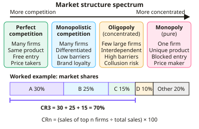

A-level Economics Year 12 · Topic 5
Competitive and concentrated markets
This topic compares market structures, from perfect competition to monopoly, and judges how efficient each one is.
We will cover concentration ratios, types of efficiency, perfect competition, monopolistic competition and oligopoly.
Then we look at monopoly and natural monopoly, price discrimination, contestable markets and monopsony.
- 8 subtopics
- 266 questions
- Free: 5.1 notes and 10 questions
In this topic
- 5.1Market structures and concentration ratiosFree below · 30 questions
- 5.2Efficiency: allocative, productive, dynamic and X-inefficiencyOpen in Full Marks · 35 questions
- 5.3Perfect competitionOpen in Full Marks · 22 questions
- 5.4Monopolistic competitionOpen in Full Marks · 26 questions
- 5.5Oligopoly: interdependence, collusion, kinked demand curve and game theoryOpen in Full Marks · 33 questions
- 5.6Monopoly, natural monopoly and monopoly powerOpen in Full Marks · 30 questions
- 5.7Price discriminationOpen in Full Marks · 29 questions
- 5.8Contestable markets, barriers to entry and monopsonyOpen in Full Marks · 61 questions
5.1 · Free notes
Market structures and concentration ratios

Key points
- Market structure describes how a market is organised: the number and size of firms, the nature of the product (homogeneous or differentiated), the barriers to entry, the availability of information and the firm's control over price.
- The spectrum runs from perfect competition (many firms, price takers) through monopolistic competition and oligopoly to pure monopoly (one seller, 100% market share). Firms with price-making power are called price makers.
- The concentration ratio CRn is the percentage of total market output, sales or employment held by the n largest firms: CRn = (sales of top n firms ÷ total market sales) × 100.
- Worked example: if firms A, B and C have 30%, 25% and 15% of a market, CR3 = 70%. Always show the sum and give the unit (%).
- A high concentration ratio (e.g. a CR4 above about 60%) suggests an oligopoly. A low one suggests many competing firms. In UK law a firm with a share of about 25% or more may be investigated as having monopoly power.
- Limitations of concentration ratios: they hide the distribution of share between the top firms, depend on how narrowly the market is defined, ignore overseas competition (imports), and say nothing about contestability or product differentiation.
- Oligopoly features: a few dominant firms, interdependence (each firm's decisions depend on rivals' reactions), high barriers to entry, and a choice between non-price competition and collusion.
- Monopolistic competition features: many firms, differentiated products (branding, quality, location), low barriers to entry and some price-making power. Only normal profit is earned in the long run, e.g. restaurants and hairdressers.
- Barriers to entry include economies of scale, sunk costs, brand loyalty, patents and licences, control of resources or distribution, and limit pricing or predatory pricing. Higher barriers mean more concentrated markets and more supernormal profit.
- A contestable market has low barriers and low sunk costs, so the threat of hit-and-run entry can force even a concentrated market to keep prices close to competitive levels. Concentration alone does not prove market power.
In more detail
- Worked CR4: four largest firms with 28%, 22%, 15% and 10% → CR4 = 75%, which suggests an oligopoly.
- Herfindahl–Hirschman Index: the HHI adds up the squares of every firm's market share, so it gives more weight to big firms and shows dominance better than a concentration ratio.
- Real structures: UK energy supply, mobile networks and supermarkets are oligopolies; hairdressers and cafés are monopolistically competitive; local water supply is a monopoly.
- Exam tip: a concentration ratio shows structure, but you should also consider conduct (how firms behave) and contestability (how easy entry is).
Practice
Market structures and concentration ratios: 10 questions
Pick an answer to check it, or open the answer for the explanation.
1. Sales (£m) of five firms in a market: A 120, B 80, C 50, D 30, E 20. What is the three-firm concentration ratio (CR3)?
- 40.0%
- 66.7%
- 16.7%
- 83.3%
Show answer
D: 83.3%. CR3 = (120 + 80 + 50) ÷ 300 × 100 = 83.3%. 66.7% is CR2, and 40% is firm A's share alone.
2. In a market worth £500m, the two largest firms have sales of £150m and £100m. What is CR2?
- 50%
- 20%
- 25%
- 30%
Show answer
A: 50%. CR2 = (150 + 100) ÷ 500 × 100 = 50%. Add the sales of the two largest firms and divide by total market sales.
3. Which is the key characteristic of an oligopoly?
- A single seller with no close substitutes
- A few large firms whose decisions are interdependent
- Free entry and exit with perfect information
- Many small firms selling identical goods
Show answer
B: A few large firms whose decisions are interdependent. Oligopoly is dominated by a few large firms, so each must consider rivals' reactions (interdependence). The other options describe perfect competition and monopoly.
4. A CR4 of 85% in an industry means that:
- The four largest firms have 85% of market sales or output
- The four largest firms earn 85% of the profit
- Each of the four largest firms has an 85% share
- There are only 85 firms in the market
Show answer
A: The four largest firms have 85% of market sales or output. CR4 measures the combined share of the four biggest firms, usually of sales or output. It shows high concentration, which is typical of oligopoly.
5. Markets X and Y both have CR2 = 80%. In X the top two firms have 40% each; in Y they have 70% and 10%. Which statement is correct?
- CR2 shows Y has more firms than X
- CR2 shows X and Y have identical competition
- CR2 hides differences in firm size; Y is dominated by one firm
- CR2 shows Y is more competitive than X
Show answer
C: CR2 hides differences in firm size; Y is dominated by one firm. A concentration ratio does not show how share is split among the top firms. Y has a dominant firm, though both ratios are equal. This is a key limitation.
6. Which of the following is a barrier to entry?
- Perfect information
- Economies of scale enjoyed by existing firms
- A large number of buyers
- Homogeneous products
Show answer
B: Economies of scale enjoyed by existing firms. Economies of scale give incumbents lower unit costs, so a small new entrant cannot compete on price. The other options describe perfectly competitive conditions.
7. Defining a market more narrowly (e.g. 'premium chocolate' rather than 'all confectionery') will most likely:
- Remove the need for sales data
- Raise the measured concentration ratio
- Leave the ratio unchanged
- Lower the measured concentration ratio
Show answer
B: Raise the measured concentration ratio. A narrower market contains fewer firms, so the largest firms hold a bigger share. Market definition is a key limitation of concentration ratios.
8. Which best describes monopolistic competition?
- Many firms selling identical products as price takers
- Many firms selling differentiated products with low barriers to entry
- Few firms with high barriers and interdependence
- One firm protected by a patent
Show answer
B: Many firms selling differentiated products with low barriers to entry. Monopolistic competition has many firms, product differentiation and low barriers to entry, so only normal profit is earned in the long run.
9. Firm shares are A 20%, B 15%, C 10%, others 55%. B and C merge. What is the new CR2?
- 35%
- 45%
- 25%
- 30%
Show answer
B: 45%. The merged firm has 25%, which is now the largest. CR2 = 25% + 20% = 45%. Before the merger CR2 was 35%.
10. A concentrated market has low sunk costs and no legal barriers to entry. Which outcome is most likely?
- Incumbents limit prices to deter hit-and-run entry
- Incumbents freely charge monopoly prices
- Its concentration ratio must be low
- No new firm can enter
Show answer
A: Incumbents limit prices to deter hit-and-run entry. Under contestability the threat of entry disciplines incumbents' pricing even if concentration is high. Low sunk costs allow quick entry and exit.
Keep going in Full Marks
Full Marks has 30 questions on Market structures and concentration ratios (20 more than here), set out in practice levels. You also get notes and 3D models for all 8 subtopics of Competitive and concentrated markets, plus games, timed exams and past papers.
On your exam board
- AQATopic 4: Competitive and concentrated markets
- OCRTopic 1.4: Market failure
- EdexcelTopic 1.3: Market failure
Not in the Cambridge specification.